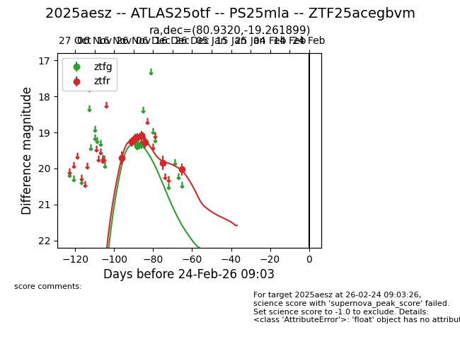
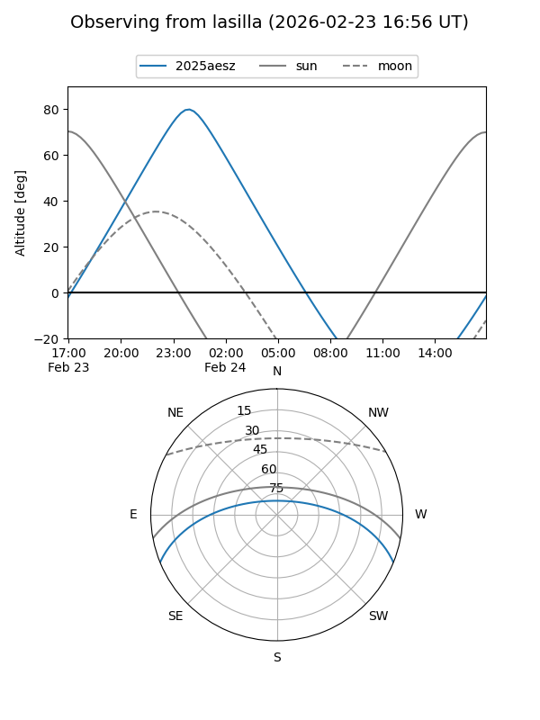
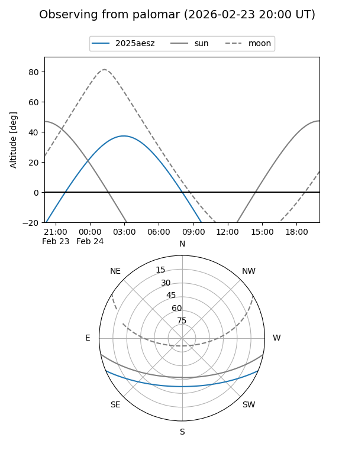
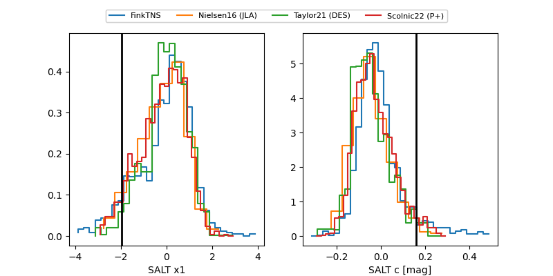

2025aesz
Target 2025aesz at 2026-01-09 12:49
Aliases and brokers:
FINK: link
Lasair: link
ALeRCE: link
TNS: link
YSE: link
alt names
ZTF25acegbvm (ztf,fink_ztf)
2025aesz (tns,yse)
ATLAS25otf (atlas)
PS25mla (panstarrs)
Coordinates:
equatorial (ra, dec) = 80.9320,-19.26190
equatorial (HMS+DMS) = 05:23:43.67,-19:15:42.84
galactic (l, b) = (221.5579,-27.65649)
Flags:
Photometry:
last ztfg=19.32, ztfr=20.03
4 ztfg, 8 ztfr detections
Lightcurve

Visibility


Additional plots
